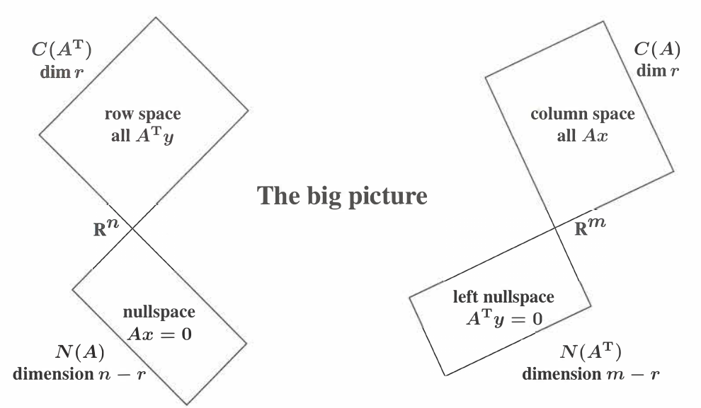

向量空间和子空间
Table of Contents
向量空间
之前的学习我们对矩阵与向量和矩阵与矩阵的乘法看作是很多数的乘法或者向量的线性组合， 这还不够，本章要更深入的理解这两者的乘法。
The Space Rn consists of all column vectors v with n components(real number)
The Space Cn consists of all column vectors v with n components(complex number)
A subspace of a vector space is a set of vectors(include \vec 0) that satisfies: if v and w are vectors in subspace,then all their linear combinations stay in the subspace
每个子空间都包含零向量。
向量空间除了 \(R^{n}\) 外，还有以下几个常用的：
M The vector space of all real 2 by 2 matrices
F The vector space of all real functions f(x)
M The vector space that consists only of a zero vector
向量空间 Z 是最小的向量空间，具有0维，也可以记作 \(R^{0}\),也就是说没有组分。注意 区别它跟其它向量空间内组分是0的向量。
子空间的一个重要应用就是矩阵 \(A\) 的列空间(column space），为了求解线性方程组 \(Ax=b\),等号左边是矩阵 \(A\) 的列向量的线性组合，这就构成了矩阵 \(A\) 的列空间，记作 \(C(A)\),要求解线性方程组就是将 \(b\) 用 \(A\) 的列向量线性表出，也就是说线性方程组有 解当且仅当 \(b\) 位于 \(A\) 的列空间 \(C(A)\) 中。如果 \(A\) 是 m 行 n 列的矩阵，那么它 的每一列都有 m 个元素，所以列向量属于 \(R^{m}\), \(C(A)\) 是 \(R^{m}\) 的子空间。
求解齐次线性方程组
Null Space(零空间) 指的是齐次线性方程组 \(Ax= 0\) 的所有解，组成的向量空间。对于一 个 m 行 n 列的参数矩阵 \(A\),齐次线性方程组的每个解都包含 n 个元素，属于 \(R^{n}\), 零空间是 \(R^{n}\) 的子空间。 对于齐次线性方程组，肯定有一个解 \(x=0\) 称为零解，除 了零解如果还有其它解称为非零解，它的解的情况是要么只有一个零解，要么有无数的非零 解。
例题：找到 \(A \quad B \quad C\) 的零空间，以及 \(Cx=0\) 的特殊解。
\begin{equation*} A= \begin{bmatrix} 1& 2&\\ 3& 8& \end{bmatrix} \quad B= \begin{bmatrix} A\\ 2A \end{bmatrix} = \begin{bmatrix} 1& 2&\\ 3& 8&\\ 2& 4&\\ 6& 16&\\ \end{bmatrix} C= \begin{bmatrix} A \quad 2A \end{bmatrix} = \begin{bmatrix} 1& 2& 2& 4&\\ 3& 8& 6& 16&\\ \end{bmatrix} \end{equation*}采用消元的方法：
\begin{align*} A= \left[\begin{array}{c c} 1& 2& \\ 3& 8& \end{array} \right] \xrightarrow[]{} U= \left[\begin{array}{c c} 1& 2&\\ 0& 2& \end{array} \right] \end{align*} \begin{align*} C= \left[\begin{array}{c c c c} 1& 2& 2& 4&\\ 3& 8& 6& 16& \end{array} \right] \xrightarrow[]{} U= \left[\begin{array}{c c c c} 1& 2& 2& 4&\\ 0& 2& 0& 4& \end{array} \right] \xrightarrow[]{} R= \left[\begin{array}{c c c c} 1& 0& 2& 0&\\ 0& 1& 0& 2& \end{array} \right] \end{align*}由 \(A\) 变换后的 \(U\) 可知原矩阵可逆，由 \(Ux=0\) 可知只有零解，它的nullspace 只包 含 \(R^{2}\) 中的 \(x=0\), 而 \(B\) 有同样的nullspace.
\(N(A)=N(U)=N(R)\). 而 \(C\) 就不同了，它有多余的列而不是行，它的解有4个元素，消元法 只能在前两列产生主元（pivot），通过观察，可得 U 的 pivot 有2个。我们称之为rank = 2. 有pivot的column 我们称之为 pivot column。 没有pivot 的 column我们称之为 Free column, 其所代表的variable，我们称为free variable。 R 称为简化的阶梯形矩阵 （reduced row echelon from R=rref(A)），到了这一步是最容易看出nullspace的。
free variable 有一个好处，就是可以随便取值，因为没有公式限定它。我们采取特殊值(0,1)的 办法求得2个特殊解。 当 \(x_{3}=1,x_{4}=0\) 时， \(s_{1}=(-2,0,1,0)\) ,当 \(x_{3}=0,x_{4}=1\) 时， \(s_{2}=(0,-2,0,1)\).
现在我们有了两个特殊解，这两个特殊解都不能代表完全的nullspace。 但是分别代表了有 \(x_{3}\) 没有 \(x_{4}\) 的情况，和没有 \(x_{3}\) 有 \(x_{4}\) 的情况，还剩下两种情况， 一种是没有 \(x_{3}\) 没有 \(x_{4}\) 的情况，一种是有 \(x_{3}\) 也有 \(x_{4}\) 的情况，
这四种情况都能由 两个特殊解的线性组合而得
\begin{align*} x= c \left[\begin{array}{c} -2&\\ 0&\\ 1&\\ 0& \end{array} \right] +d \left[\begin{array}{c} 0&\\ -2&\\ 0&\\ 1 \end{array} \right] \end{align*}这样子就能代表整个null space
查找主元个数的方法引向了一个非常重要的理论，假设 \(A\) 的列数多于行数(n>m)，那至少 有一个自由变量， \(Ax=0\) 至少有n-m个自由变量，因为主元的个数不可能超过m.至少有一 个特殊解（special solution），这个特殊解是非零解。
The nullspace is a subspace,It's dimension is the number of variables.
矩阵的秩
一个线性系统（linear system）的真正大小并不能由其参数矩阵的大小（m行n列）真实反 应出来，比如矩阵中的某一行是其它若干行的线性组合，在消元的过程中这一行会变成零行， 零行对于解线性方程组是没有用的。所以要表示一个线性系统真正的大小应该使用消元后 U 或 R 的 非零行 的个数来表示，并且这个数与主元的个数相等，我们把它叫做矩阵 A 的秩（rank),记作 r ,我们有：
Defination: The rank of A is the number of pivots.This number is r
如果矩阵中存在pivot那么证明，第i行的pivot下面的行没办法表示出第i行，上面的也没办 法表示第i行，
有了秩的概念以后就可以更准确的知道齐次线性方程组解的情况了： \(Ax=0\) 自由变量的个 数等于 \(n-r\),当自由变量个数等于0的时候原齐次线性方程组没有特解，否则有 \(n-r\) 个 特解。 \(n-r\) is the dimension of the nullspace
比如一个3x4矩阵：
\begin{align*} A= \left[\begin{array}{c c c c} 1& 1& 2& 4\\ 1& 2& 2& 5\\ 1& 3& 2& 6 \end{array} \right] \xrightarrow[]{} U= \left[\begin{array}{c c c c} 1& 1& 2& 4\\ 0& 1& 0& 1\\ 0& 0& 0& 0 \end{array} \right] \xrightarrow[]{} R= \left[\begin{array}{c c | c c} 1& 0& 2& 3\\ 0& 1& 0& 1\\ \hline 0& 0& 0& 0 \end{array} \right] \end{align*}有两个主元 r=2.
从行的角度看这次变换，从上往下看各行，第2行不是第1行的线性组合，第3行确实前两行 的线性组合： row(3)=2*row(2)-(1),所以主元位于第1,2行；
从列的角度看这次变换，从佐往右看各列，第2列不是第1行的线性组合，后两列都是前两列 的线性组合（从矩阵 \(R\) 很容易得出）： col(3)=2*col(1)+0*col(2)col(4)=3*col(1)+1*col(2) ,而它的两个特解是 s1=(-2,0,1,0),s2=(-3,-1,0,1). 很容易观察到，自由列线性组合的系数跟特解中主 元列的取值是相反数的关系。实际上消元到最后的 \(R\) 可以写成如下形式（可能需要改变 列的顺序）：
\begin{align*} R= \left[\begin{array}{c c} I& F\\ 0& 0 \end{array} \right] \end{align*}而null space 有一个通用的表达方式。那就是：
\begin{align*} x= c* \left[\begin{array}{c} -F\\ I \end{array} \right] \end{align*}总结：
在使用消元法把矩阵 \(A\) 变换到 \(U\) 的过程中，从第一个主元开始，每次从上往下移动1 行，从左往右移动1列，随着移动，消去过程中同时回答了2个问题：
- 这一列是前面列的线性组合吗
- 如果这1列包含主元，那就不是。主元列和前面的列是 独力的关系。
- 这一行是前面行的线性组合吗
- 如果这1行包含主元，那就不是。主元行和前面行也是 独力的。
从矩阵 \(U\) 可以看出哪些是主元列，哪些是自由列，而且自由列是主元列的线性组合；从 矩阵 \(R\) 可以直接看出主元列是怎么线性组合出自由列的。
从 \(U\) 变到 \(R\) 是从下往上，从右往左进行的。 在接下来的学习中 \(R\) 揭示了下面三个 空间的基（basis）
- The column space of \(A\)
- choose the pivot columns of A as a basis
- The row space of \(A\)
- choose the nonzero row of A as a basis
- The nullspace of \(A\)
- choose the special solutions to \(Rx=0\)
我们从消元法中学到了一个很重要的概念－－秩 r ，它表征了主元行和主元列的个数， n-r 表征了自由列和特解的个数。
另外从 [A I] 到 [R E], 两边都乘个 E 可得 EA=R,当 A 是方阵而且可逆时， R 是 I, E 是 A-1 .
\(Ax=b\) 的全解
在上一节解决了齐次线性方程组的解的问题， 将 \(Ax=0\) 转化到 \(Rx=0\),自由变量（free variable)被赋予 特殊值（0或1），主元变量（pivot variable）可以采用回代的方式解算，这个过程中并没 有在意等式右边的常数项，因为它始终是0.现在常数项不再是0了，在进行初等行变换的时 候必须要考虑常数项了，因此把常数项添加到系数矩阵上的最后一列，组成增广矩阵 （augmented matrix） [A b], 还是像原来一样进行初等行变换，把 A 变换到 R,同时 b 也跟着变换，得到 [U/R d] 矩阵以后，最后一行非常关键，如果系数项全为0,常数项不为 0,那就无解了，只有当它们都为0或者都不为0时才有解。
要解 \(Ax=b\) 首先要找到一个particular solution \(x_{p}\), 使其满足上面等式，然后再 找到使 \(Ax=0\) 成立的special solution \(x_{n}\), 全解 \(x=x_{p}+x_{n}\)
One particular solution \(Ax_{p}=b\)
要找到particular solution,需要先将增广矩阵和以前一样转换到 [R d] 也就是 A->D,b->d,然后将R中的自由变量全都赋值0,主元变量从d中获得。
For a solution to exist,zero rows in R must also be zero in d,the pivot variables in xparticular comes from d.
\(x_{particular}\) 可以解决 \(Ax_{p}=b\) 的问题， \(x_{nullspace}\) 中 n-r 个special solutions解决了 \(Ax_{n}=0\) 的问题。那么 \(Ax=b\) 的全解就应该是 \(x=x_{p}+x_{n}\),
如果 A 是一个方阵而且可逆，m=n=r,那么particular solution就是唯一解， \(x_{particular}=A^{-1}b\),没有自由变量和special solution.
当 n=r 时，称 \(A\) 是 列满秩（full column rank）,它有如下性质：
- \(A\) 的所有列都是主元列
- 没有自由变量和special solution
- The nullspace N(A) contains zero vector \(x=0\)
- \(Ax=b\) 有唯一解或没有解（m>n is overdetermined）
Full column rank is tall and thin
\begin{equation*} R= \begin{bmatrix} I\\ 0\end{bmatrix} = \begin{bmatrix} n \: by \: n \: identity \: matrix\\ m-n \quad rows \: of \: zeros \end{bmatrix} \end{equation*}所以当 d 中有 m-n 行0的时候才有唯一解，否则就没有解。
当 m=r 时称 \(A\) 是 *行满秩（full row rank），它有如下性质：
- \(A\) 的所有行都有主元， \(R\) 没有零行
- \(Ax=b\) has a solution for every \(b\)
- The column space is the whole space \(R^{m}\)
- There are \(n-m=n-r\) special solutions in \(N(A)\)
当 m<n 时， \(Ax=b\) 有无穷解（underdetermined），
| rank r | \(A\) shape | solutions | \(R\) |
|---|---|---|---|
| r=m,r=n | square,invertible | 1 solution | \(\begin{equation*}\begin{bmatrix} I\\ \end{bmatrix}\end{equation*}\) |
| r=m,r<n | short,wide | ∞ solutions | \(\begin{equation*}\begin{bmatrix} I \quad F\\ \end{bmatrix}\end{equation*}\) |
| r<m,r=n | tall,thin | 0 or 1 | \(\begin{equation*}\begin{bmatrix} I\\0 \end{bmatrix}\end{equation*}\) |
| r<m,r<n | not full rank | 0 or ∞ | \(\begin{equation*}\begin{bmatrix} I& F&\\0& 0& \end{bmatrix}\end{equation*}\) |
Four Subspaces
线性独立（Linear Independence）
矩阵 \(A\) 的列空间的真正大小并不一定是 n,而是 rank r,
DEFINITION1: The sequence of vectors v1,…,vn is linearly Independence if the only combination that gives the zero vector is 0v1+0v2+⋯+0vn
DEFINITION2: The columns of \(A\) are linear independence when the only solution to \(Ax=0\) is \(x=0\), No other combination of columns gives zero vector
#+end_quote 关于线性独立（linear independence)的概念从字面意思可以分成两部分来理解，线性是指 向量的线性组合，独立的意思是这些向量之间没什么关系，相互之间不能线性表出。
Any set of n vectors in \(R^{m}\) are dependent if n>m.
这句话的前半句可以理解为一张 mxn 大小的矩阵，共有n个列向量，每个向量有m个元素； 后半句理解为如果列数大于行数（short and wide）那么它的列向量肯定线性相关。因为它 会有至少 n-m 个自由变量，对应相应个数的特殊解，所以它的零空间里不只有零解。
矩阵经过消元后，分别得到 r 个主元行和主元列，主元行之间是独立的，主元列之间也是 独立的。
Vectors span a subspace
回忆之前列空间的定义：矩阵的列空间是它所有列向量线性组合所充满的子空间。现在我们引 入 生成（span） 来重新定义子空间：
DEFINITION: A set of vectors spans a subspace if their linear combinations fill the space.
DEFINITION: The column space \(C(A)\) of a matrix is a subspace of \(R^{m}\) spanned by columns.
DEFINITION: The row space of a matrix is a subspace of \(R^{n}\) spanned by rows,it is \(C(A^{T})\),it is column space of \(A^{T}\).
假设有个3行5列的矩阵，它的列空间是 \(R^{3}\) 的子空间，它的其中2个列向量肯定是能用 其它3个列向量线性表出的，那么我们在生成这个矩阵的列空间时就不需要用全部（5个）的 列向量了，而只需要其中那3个线性独立的列向量就可以了。 这就引出了向量空间(vector space)的基（basis）的概念
Basis (基)
DEFINITION: A basis for a vector space is a sequence of vectors with two properties: The basis vectors are linearty independent and they span the space
There is one and only one way to write v as a combination of the basis vectors The columns of the n by n identity Matrix give the “Standard basis” for Rn The vectors v1,…vn are basis for Rn exactly when they are the columns of an n by n invertible matrix. Thus Rn has infinitely many different bases The pivot columns of A are a basis for its column space.The pivot rows of A are a basis for its row space . So are the pivot rows of its echelon form R.
消元后的主行和主列有一个特点，就是他不能被其他行和列线性组合出来，也就是在这个行和列中挑选出来的线性独立的行和列就是主行和主列，那么一个矩阵的行空间或列空间的基就是主行和主列。
对于一个确定的vector space其不同的基，具有相同的向量数量。这就是一个向量空间的纬 度（dimension）
Dimension (纬度)
一个空间的dimension，是其一组基向量内向量的个数。
DEFINITION: The dimension of a space is the number of vectors in every basis.
对于一个矩阵，他的column space的基是主列，主列的个数和pivot的个数相同，pivot的个 数就是rank，哈哈，没错一个矩阵的列空间的dimension是rank，没错吧，所有知识点都是 相互勾连在一起的，而这些相互关系的最终基础就是linear combination。
Dimension of Four Subspaces
本节主要讨论秩（rank）和维度（dimension）关系。
The rank of a matrix is the number of pivots,the dimension of a subspace is the number of vectors in a basis. The rank of \(A\) reveals the dimensions of all four fundamental subspaces
The row space is \(C(A^{T})\) ,a subspace of \(R^{n}\)
The column space is \(C(A)\) ,a subspace of \(R^{m}\)
The nullspace is \(N(A)\) ,a subspace of \(R^{n}\)
The left nullspace is \(N(A^{T})\) ,a subspace of \(R^{m}\)
在把mxn的矩阵 \(A\) 变为阶梯形矩阵 \(R\) 后，一般会产生0行放在最下面，所以A中的列向 量一般不会出现整体一行都是0的情况，而在 \(R\) 中就很常见，所以A的列空间不等于R的列 空间。 虽然变换后的列空间不一样了，但是在A中不独立的向量对应的在R中也不独立，所 以矩阵A的列空间 \(C(A)\) 的基是 r 个线性独立的列向量，维度等于 r.
\(A\) 的行空间和 \(R\) 的行空间一样，因为A的每一行都能由R的行向量线性表出，反之亦然， 消元只改变了行，改变不了行空间。既然行空间一样，那就可以从 \(R\) 中选择前 r 行线性 独立的行向量作为基，也可以选择 对应 的 \(A\) 中的行向量作为基。行空间的维度等于秩 r.
\(A\) 的的零空间和 \(R\) 的一样，特殊解（special solution）构成了零空间的基，所以零 空间的维度很明显就是 n-r.
\(A\) 的左零空间的维度等于 m-r.
Fundamental Theorem of Linear Algebra,Part 1
The column space and row space both have dimension r.
The nullspaces have dimensions of n-r and m-r.
综上所述，我们有以下等式： \(dim C(A)= dim C(A^{T})=r \quad dim C(A)+ dim N(A)=m \quad dim C(A^{T})+ dim N(A^{T})=n\)
